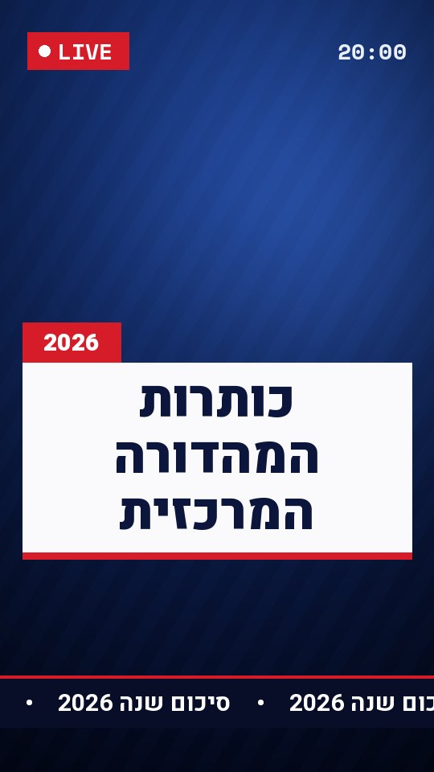

About the project
“Grandma Tales” is a personal hybrid documentary that tries to capture my grandmother’s personality and, through the filmmaking itself, fulfill a dream she had long given up on.
Challenges
- Taking a grip on a huge amount of raw footage in the edit room
- Cracking the film’s narrative in the edit
- Directing a non-professional actress
More work
 Content warning: implied sexual content and self-harm
Content warning: implied sexual content and self-harmDirector, screenwriter, editor and special effects
View projectWithin Closed Eyes
8:34Fiction
 Content warning: nudity and flashing lights
Content warning: nudity and flashing lightsDirector, cinematographer, gaffer, editor
View projectHim
2:46Video art

Director, screenwriter, co-producer, editor
View projectEvening News Headlines
12:13Mockumentary

Exhibition producer, poster photographer and exhibiting artist
View projectGei Ben Hinnom
“Back to Nature”Dec 25, 2024

Created a work for the exhibition
View projectLost in Migration
“Dlatim”June 10–12, 2025

Director, screenwriter, co-producer, editor
View projectEvening News Headlines
“Bezalel Ba’am”May 19–20, 2026
Looking forward to working with you!
- Based inJerusalem / Ramat Gan
- Emailasrotal@gmail.com
- WhatsApp+972 50-222-5071
- Instagram@asaf___t